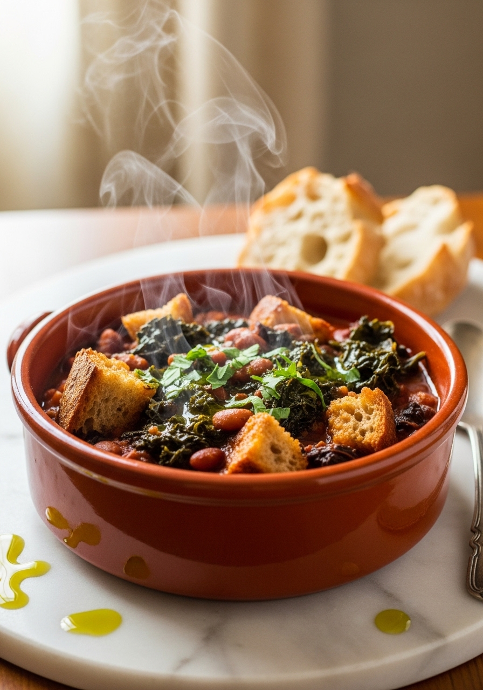
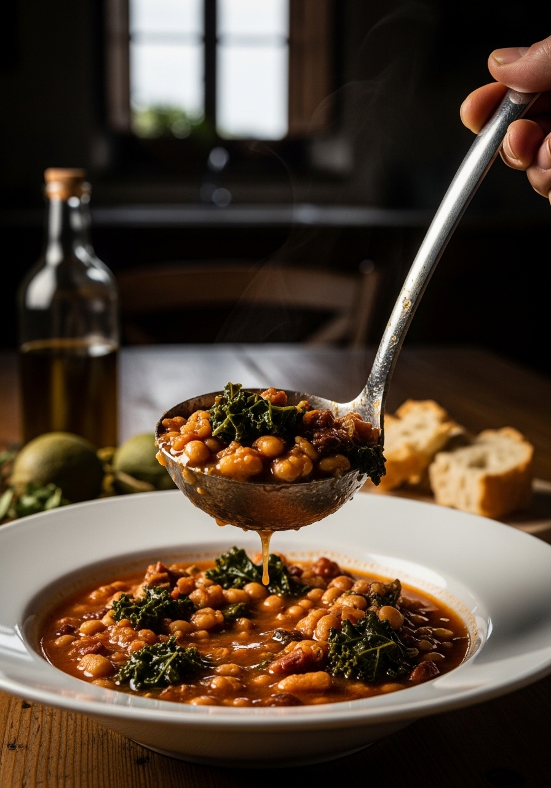

Ribollita significa 'riscaldata' in italiano — e questo dice tutto su questo piatto. Una zuppa toscana densa e profondamente appagante fatta con fagioli cannellini, cavolo nero e pane raffermo che ispessisce l'intero tegame fino a creare qualcosa tra una zuppa e uno stufato. È cibo contadino che è diventato uno dei piatti più celebri della Toscana.

Classico ToscanoRibollita significa letteralmente 'riscaldata' — perché la zuppa veniva tradizionalmente preparata il sabato dai resti della minestrone, poi ribollita la domenica e il lunedì. Ogni riscaldamento fa assorbire al pane più liquido, i fagioli si disfano ulteriormente e i sapori si fondono più in profondità. Al terzo giorno, quella che era una zuppa è diventata qualcosa di più simile a un denso porridge di fagioli e pane. Le nonne toscane considerano la ribollita del terzo giorno la versione migliore. Prepara una grande quantità e verificalo tu stesso.
La ribollita si prepara tradizionalmente con il pane sciocco — il pane toscano non salato, volutamente neutro perché è fatto per assorbire i sapori piuttosto che aggiungerne di propri. Fuori dalla Toscana, qualsiasi buon pane a lievitazione naturale o pane di campagna va bene. Il pane deve essere raffermo — di almeno un giorno. Il pane fresco si disintegra troppo rapidamente creando una consistenza collosa. I pezzi strappati a mano invece delle fette è la tecnica corretta.
Ingredienti
Procedimento

La ribollita si conserva in frigorifero per 5 giorni. Ogni riscaldamento la migliora. Per riscaldarla: aggiungi un goccio d'acqua o brodo (si addensa notevolmente da fredda), scalda a fuoco medio-basso mescolando. La ribollita si congela bene per 3 mesi. Scongela in frigorifero durante la notte e riscalda con liquido aggiuntivo.
Il cavolo nero è il cavolo toscano — una verdura a foglia scura e leggermente amara con un sapore robusto. È la scelta tradizionale per la ribollita e si trova nella maggior parte dei supermercati. Il cavolo riccio comune è il miglior sostituto. Funziona anche la verza, anche se è più delicata.
La ricetta base può essere facilmente resa vegetariana usando brodo vegetale e omettendo la crosta di Parmigiano. Aggiungi invece un cucchiaio di miso bianco per profondità. Il risultato è ugualmente appagante.
Qualsiasi pane a lievitazione naturale raffermo o pane rustico di campagna funziona perfettamente. Le qualità fondamentali sono: raffermo (non fresco), con crosta (non pan carré morbido), e neutro di sapore. Evita pani con semi o sapori forti.
O non hai aggiunto abbastanza pane o il pane non era abbastanza raffermo. Aggiungi altro pane raffermo spezzettato e continua a sobbollire — assorbe liquido rapidamente. Ricorda: la ribollita deve essere molto densa, più simile a uno stufato che a una zuppa.
Sì — cuoci a bassa temperatura per 8 ore o alta per 4 ore. Aggiungi il pane negli ultimi 30 minuti di cottura a temperatura alta. La crosta di Parmigiano va inserita dall'inizio. Il risultato è eccellente e richiede poco lavoro.